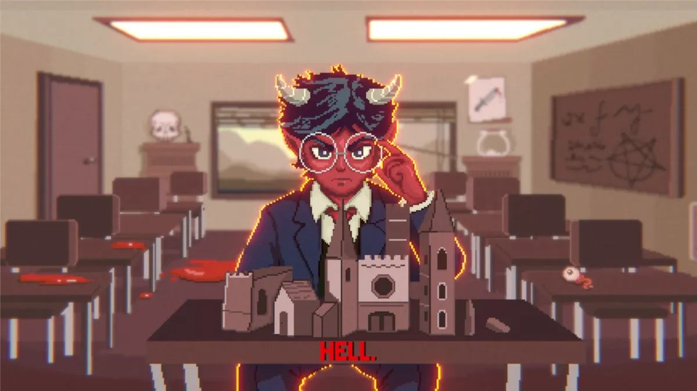
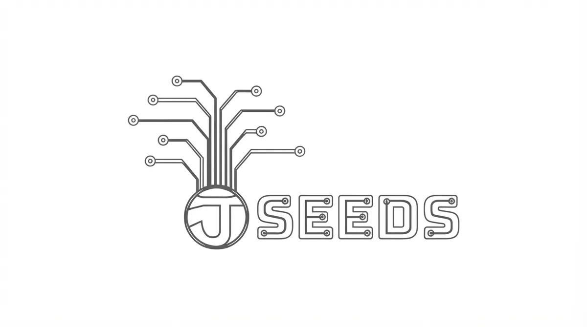
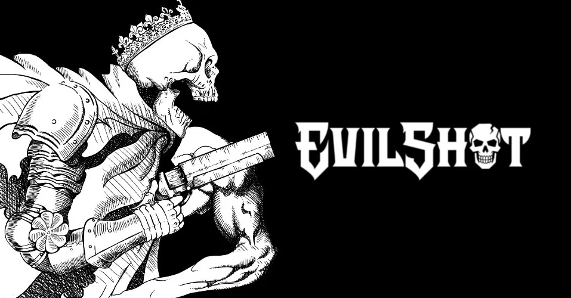
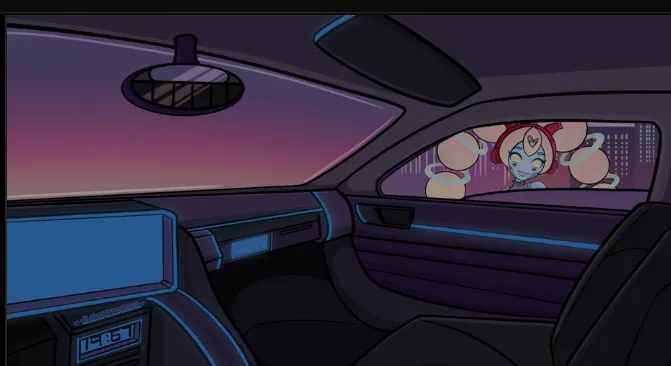
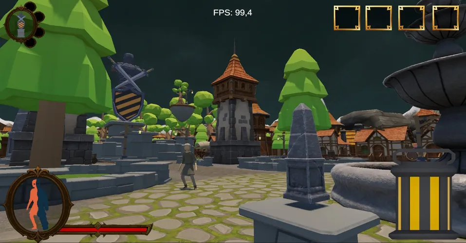

Design Help · Programming
Hell Architect: Survivors
pub. Leonardo Interactive · Unity
Game Designer & Level Designer
Progetto esperienze di gioco: dall'architettura dei livelli alla meccanica del gameplay. Ogni spazio racconta una storia.





Sono Francesco Luigi Cerulli, Game Designer e Level Designer con esperienza nel creare esperienze di gioco coerenti e coinvolgenti.
Dal progettare sistemi di gameplay alla costruzione di spazi tridimensionali percorribili, il mio approccio unisce logica architetturale e narrazione ambientale: ogni corridoio ha un ritmo, ogni arena una tensione.
Ho lavorato su titoli indipendenti e in studio, sviluppando competenze trasversali tra design e programmazione su Unity e Unreal Engine 5.